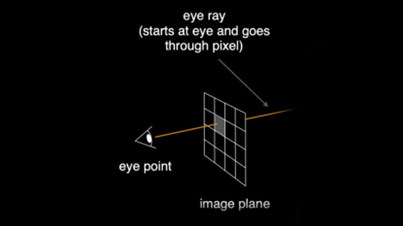
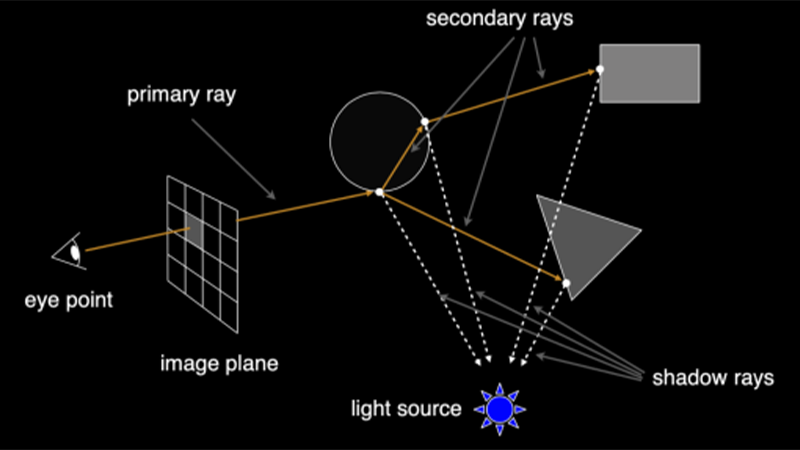
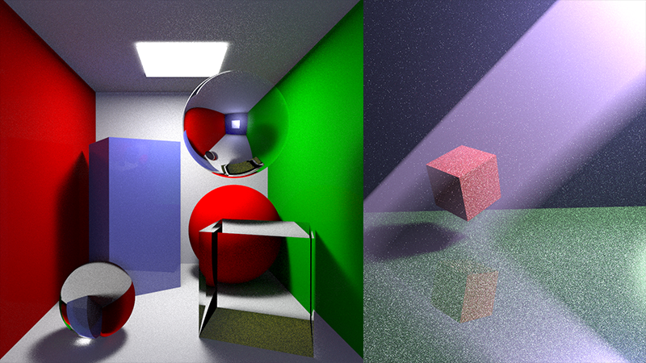
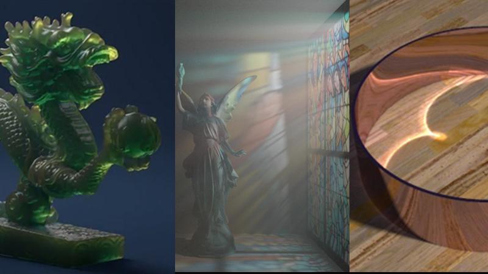

一张1K图像有超 100万 像素。为消除噪点，每个像素需采样 100+ 次，这意味着初始就有超 1亿 条光线要追踪。
每条光线在场景中平均弹射 8-16 次才能找到光源，每次弹射都要和所有物体求交。总计算量轻松突破 数十亿。
即便在顶级的RTX 4090上，渲染一张包含复杂材质的“简单”场景，耗时也以 分钟 计算，无法用于实时交互。
当涉及皮肤（次表面散射）、烟雾（体渲染）等效果，单帧画面在专业渲染农场耗费 数小时 甚至 数天 都是常态。
Transformer的注意力机制是核心瓶颈:
二次方复杂度导致其难以处理高面数的复杂场景，极大地限制了实用性。
由于我们的模型是数据驱动的，其渲染风格并不局限于物理真实。通过使用不同的训练数据集，模型可以学习并生成高度风格化的效果，例如“三渲二”卡通渲染，为艺术创作提供无限可能。
Transformer渲染管线开创了神经渲染的新方向。我们的工作旨在通过引入Transformer-VQ机制，解决其核心性能问题，期待能为实现真正的实时、高质量、通用的神经渲染器迈出坚实的一步。